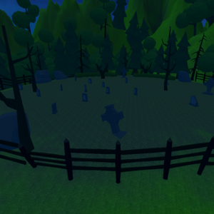
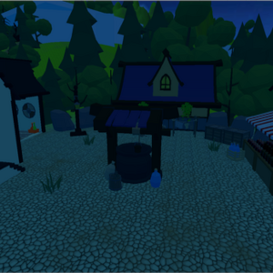
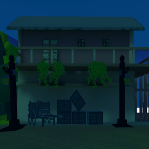

Shoot o' Treat
A Halloween themed first-person shooter. It is a wave based survival game, you have 3 weapons available to you.
Ammo is scarce and the night terrors are relentless. Fend off the night against evil candy out to get you.
Explore the village and survive as long as you can, as waves get harder with each passing.
Developed in Unity, with assests from various sources such as the Unity Asset Store and Itch.io store. Enemy uses BreadCrumb
AI for pathfinding. It was a solo project that I wanted to do for the spirit of Halloween.
Goal
I wanted to practice level and environment design, as well as designing first person shooter controls.Development
The game was developed in Unity and coded in C#. I started development by getting a basic first-person controller established. I then moved onto basic shooting mechanics. The game only has 3 weapons, a pistol, submachine gun, and shotgun. The idea behind this design is to balance weapon choices. Pistol would have unlimited ammo but has a low fire rate and damage output. The SMG would fire faster with slightly lower damage. The shotgun will fire slower with small ammo capacity and range, but makes up for it in high damage output. These variables would be adjusted during playtests, such as ammo amount, fire rate, and damage. The weapons are hit scan, spawning a particle effect to indicate where the bullets flew and landed.Next I designed the level. The main level is comprised of 3 parts, the graveyard, the town, and the port. I first made a sketch of the layout. Then I gathered free 3d models themed around fantasy from various sources like the Unity Asset Store and Itch.io asset store. To make the aesthetic cohesive, I went with low-poly models with flat colors. I also used the same types of models for the guns and enemies. With all the models gathered, I designed the level and tested to make sure movement was feasible in the level.
|  |  |  |

To add more to the scene, I placed low poly trees around the map and as well as other decor. Although the map is secure, to ensure the player doesn't go out of bounds, I placed invisble walls around the map in areas like buildings, the beach, and fences. This is to make sure the player stays within the playable area.
Since the game was themed around Halloween, I made the enemies into candy and sweet treats. The enemy would have two states: wander an area, follow player if within range. The enemies used Breadcrumb AI, which is free in the Unity store. The player will periodically leave instances of path nodes behind them, and the Breadcrumb AI will follow a trail behind the player if they are in range. Variables such as damage amount, health, movement speed, and detection ranged were adjusted during playtesting.
Since this is a wave-based game, the spawn system took awhile to figure out. Basically, the enemies spawn within random spawn points placed around the map. I chose specific points to place as I didn’t want the enemy to glitch into buildings. There is a total enemy counter that is increased after each wave. There are unlimited waves, so the player will keep playing until they die. In case enemies do spawn outside the map, I made invisible colliders that will cause the enemies to be destroyed and increment the counter accordingly.